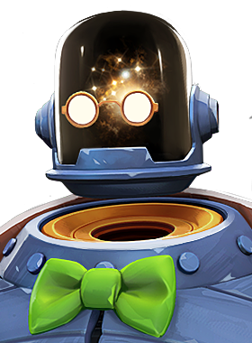

Kinetic Pulse
Release an energy pulse that travels along the ground, dealing spirit damage and applying knockup. The pulse can travel up and down stairs and ramps.

One black hole can make all the difference.
Release an energy pulse that travels along the ground, dealing spirit damage and applying knockup. The pulse can travel up and down stairs and ramps.
Briefly disappear into the void and reappear at a target location. On reappearing, your weapon is reloaded and gains a fire rate bonus for the next clip. Can be cast with M3 to bring nearby allies along, granting them half the fire rate bonus.
While channeling, restore health over time to yourself and nearby allies. Dynamo can dash and melee during the channel.
Create a singularity in your hands, dealing spirit damage over time, applying stun, and pulling in nearby enemies. The pull is continuously applied, so enemies caught in the radius cannot escape except through instant displacement effects.
As a Scientist, Professor Dynamo always had an inquisitive mind. So when a rift in space and time opened up in Central Park he was first on the scene to investigate—and while he expected such a majestic sight to be life changing, he was thinking more in a metaphorical way as opposed to having his body atomized and reduced to a tiny dying star.
But while his body is gone, his spirit and lust for knowledge lives on. A tenured professor at Columbia College, Dynamo looks to learn more about his condition while maintaining his class load, after all: he has future minds to inspire.
Few things can warp a team fight more than a well-coordinated use of Singularity.